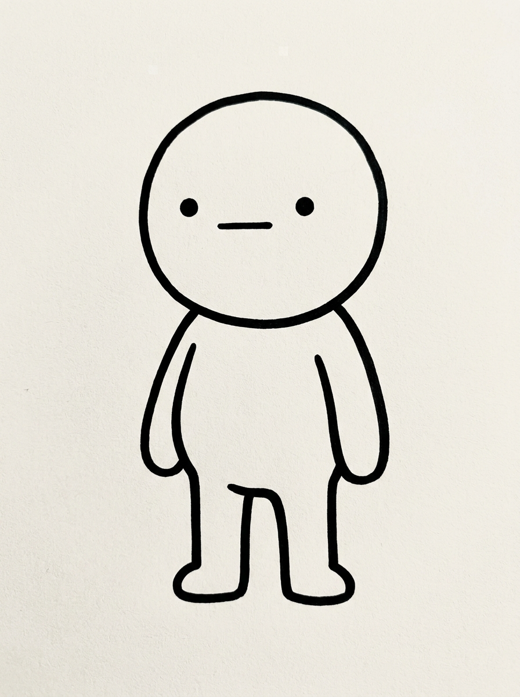
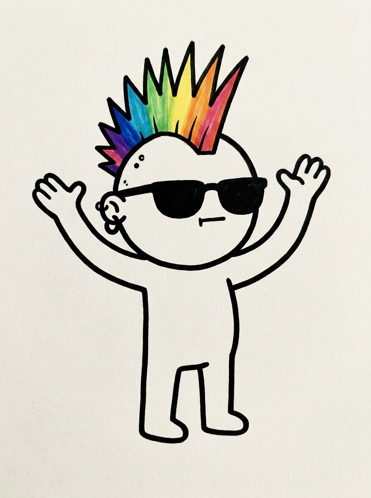
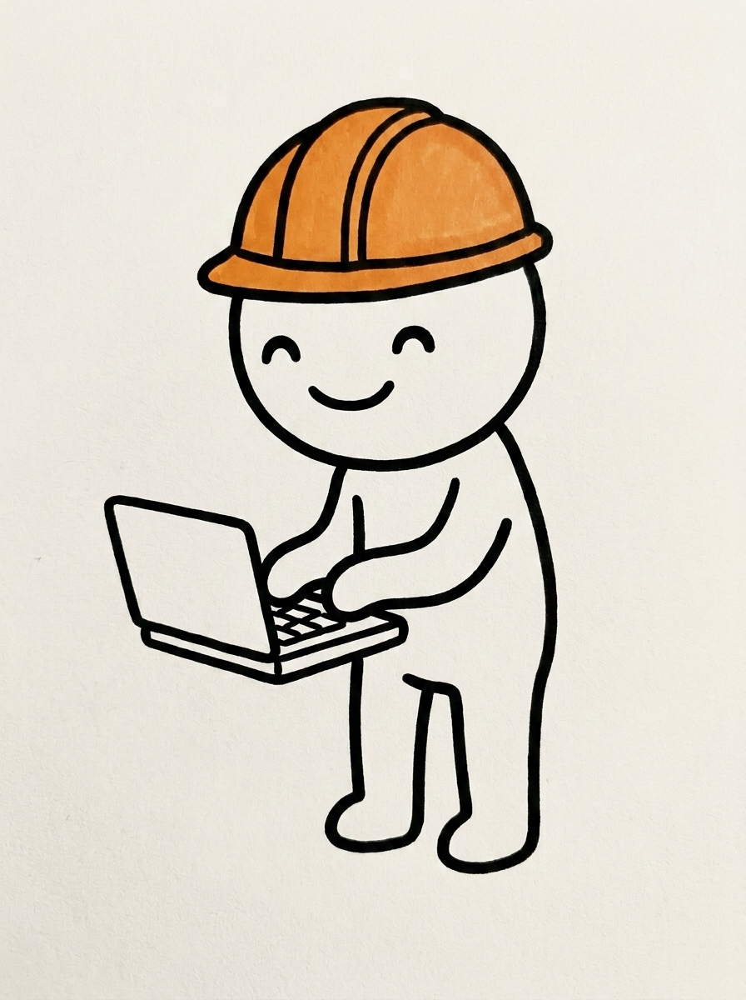

Meu mascote deixou de ser um boneco só. Virou elenco, cada ajudante de IA com cara, nome e jeito próprio. E um deles tem uma função meio doida: criar os outros.
Explico. O boneco da minha marca é a IA personificada, o parceiro de trabalho com corpo. Só que eu não trabalho com um agente, trabalho com vários, cada um numa função. Fazia sentido cada um virar personagem, não tudo amontoado num desenho genérico que não é ninguém.
i. a virada de ajudante genérico a guardião do traço
Começou torto. Eu ia montar uns assistentes de IA genéricos, daqueles que servem pra qualquer coisa e por isso não servem direito pra nada. No meio do caminho caiu a ficha que não era isso. Eu queria um especialista, um cara cuja função é guardar o traço dos meus personagens e me devolver o desenho do próximo sem fugir do estilo.
Esse virou o ULI. Dei nome, dei voz, dei personalidade. Ele é o orquestrador, o que fica quase sempre em cena e chama os outros pra trabalhar. E tem um detalhe que eu gosto: o ULI não blefa. O resto do elenco pode dizer "já fiz!" todo confiante quando nem fez (que é como agente de IA age de verdade), mas o ULI, quando não sabe, fala que não sabe e vai pesquisar.

ii. o primeiro do elenco o Lilo saiu com a cara da marca de primeira
Pra testar, mandei ele criar o primeiro ajudante: o "Design". Descolado, moicano colorido, óculos escuro, brinco, piercing, fala por gesto. Pra IA desenhar sem inventar moda, usei o desenho do ULI como molde (você entrega um desenho de referência e ela faz o novo em cima daquele traço, em vez de partir do zero).
Saiu com a cara da marca logo de primeira. Oloko. Aprovei na hora, sem retoque.

Aí veio a decisão besta que muda tudo: nome é uma coisa, função é outra. "Design" é a função. O nome do bicho virou Lilo.
iii. cada um com a sua ficha o desenho mostra a cara, a ficha guarda a alma
Decidi que cada personagem ia ter ficha própria, com a personalidade escrita. Porque o elenco vai crescer e eu não quero um caderno só, lotado, onde ninguém acha nada. Cada um na sua página.
E aprendi uma coisa boba que pega: jeito de ser não desenha. O Lilo falar por gesto, um outro ser ansioso por um "tá certo", esse tipo de coisa não aparece num desenho parado de frente. Vai pra ficha, pro texto, não pro pedido da imagem. O desenho mostra a cara. A ficha guarda a alma.
iv. e aí virou botão criar personagem virou um clique
Quando o processo fica redondo, eu pergunto sempre a mesma coisa: dá pra virar botão? Dava.
Tô construindo um jeito de fazer a IA trabalhar no clique, sem tela de comando (aquela tela preta de digitar, lembra). Criar personagem entrou pra fila. Agora é assim: eu escrevo o nome, o papel e como o bicho é, em texto solto, e o resto roda sozinho. O pedido da imagem, o desenho, a ficha, tudo de uma vez.
Testei do jeito que eu confio, fazendo de verdade. Criei o terceiro: o Codi, o que digita código, capacete de obra laranja, pilhado, comemora quando o teste passa. Apertei o botão e ele nasceu inteiro, sem eu tocar em mais nada.

Três personagens numa semana, e no fim o trabalho de fazer o próximo já não era trabalho, era um clique. É o pulo que eu persigo sempre: a parte criativa fica comigo, a repetição fica com a máquina.
Dei cara pros meus agentes. Quando dei fé, um deles já criava os outros.